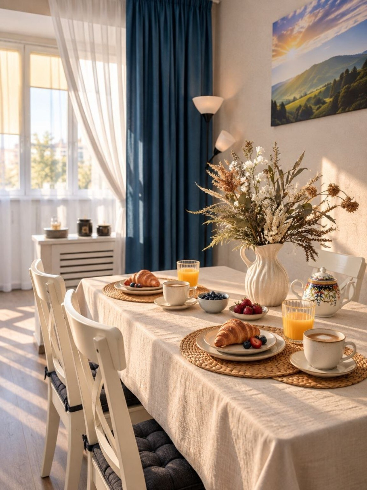
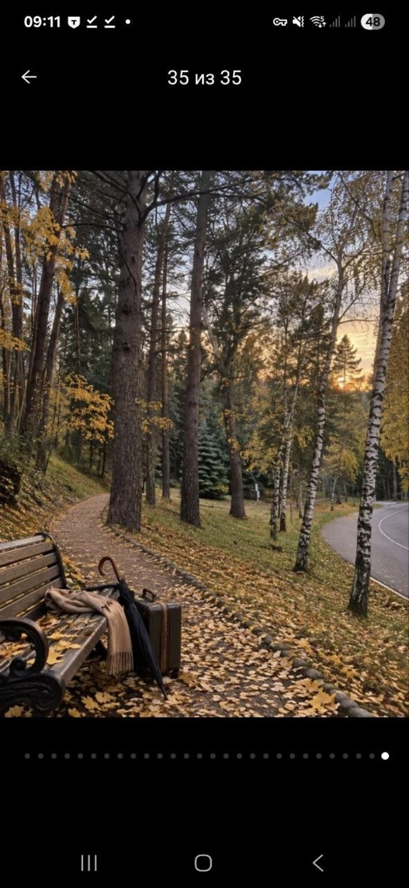
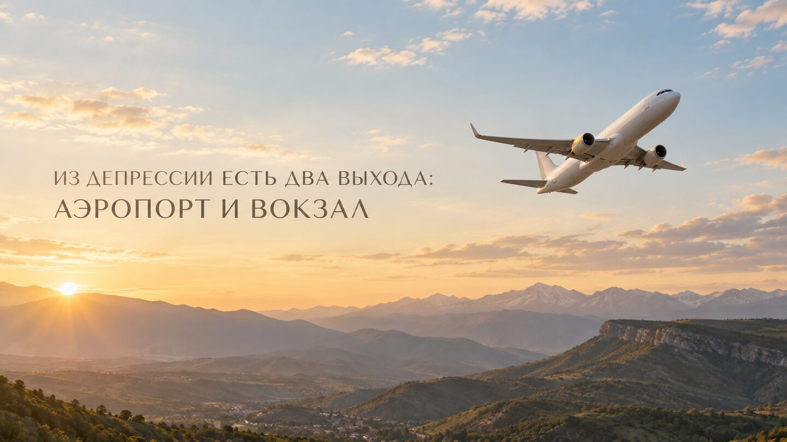
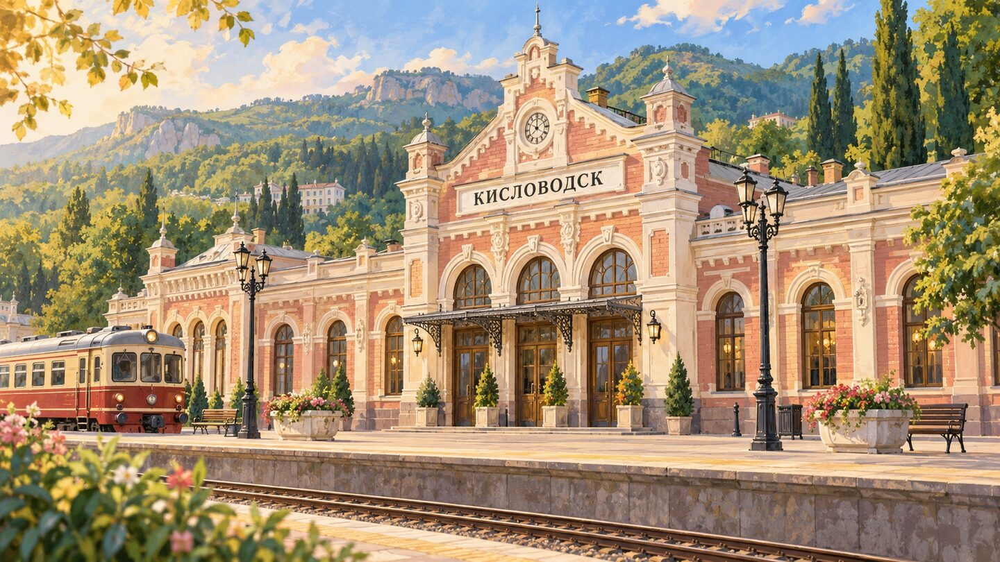

Кухня
Полноценная кухня и обеденная зона для завтраков и семейных ужинов.

Кисловодск · рядом с санаторием «Солнечный»
Тихое, тёплое пространство, куда приятно возвращаться после прогулок по городу и парку.
Не просто ночлег
Солнечное утро, неспешный завтрак, книга у окна и вечерний свет. Здесь легко замедлиться и почувствовать Кисловодск.





Каждому своё пространство
В квартире предусмотрено несколько вариантов для комфортного сна и отдыха. Можно проводить время вместе, сохраняя личное пространство.


Всё необходимое рядом
Полноценная кухня и обеденная зона для завтраков и семейных ужинов.
Свет, воздух и отдельные уютные места для чтения или чашки кофе.
Ванная комната и туалет расположены отдельно. Есть бойлер для горячей воды.
Бесконтактный заезд — удобно, даже если вы прибываете позднее.
Всё понятно с первого раза
Телевизор, стиральная машина и микроволновка — коротко, наглядно и всегда под рукой.
Удобная точка для прогулок
Кисловодск, улица Куйбышева, 79. Ближайшая остановка «Пенсионный фонд» — примерно 130 метров от дома.
Всё необходимое по адресу: улица Куйбышева, 51.
Открыть на карте → РядомПродуктовый магазин на улице Андрея Губина.
Открыть на карте → 01Кафе, прогулки и знаменитая курортная архитектура.
Открыть на карте → 02Знакомое многим гостям города место на улице Кирова.
Открыть на карте → 03Нарзан, история города и начало большой прогулки.
Открыть на карте → 04Один из символов Кисловодска у входа в парк.
Открыть на карте → 05Зелёная прогулочная зона для спокойного отдыха.
Открыть на карте → 06Прогулки у воды и ещё один сценарий неспешного дня.
Открыть на карте → 07Удобно открыть маршрут перед приездом или отъездом.
Открыть на карте → 08Ориентир рядом с квартирой.
Открыть на карте →Гуляйте, дышите горным воздухом, пейте нарзан — а домой возвращайтесь в тепло.
Свободные даты и стоимость
Календарь показывает актуальную занятость квартиры. Выберите даты и количество гостей — бронирование продолжится в защищённом модуле RealtyCalendar.
Календарь не загрузился или вы вернулись после просмотра бронирования.
Открыть бронирование отдельно